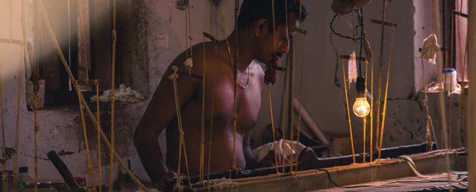
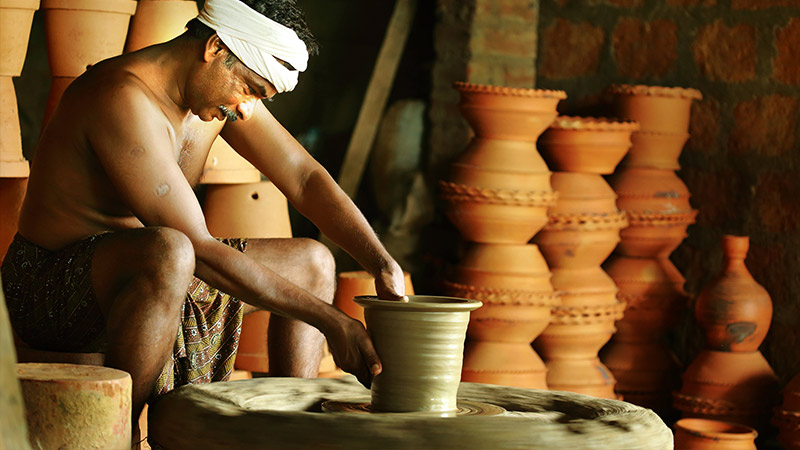
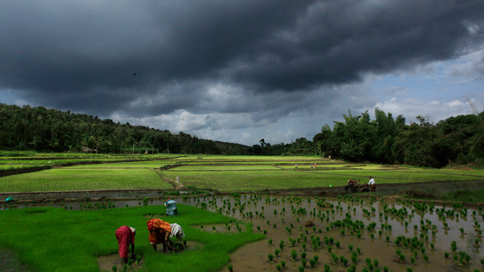
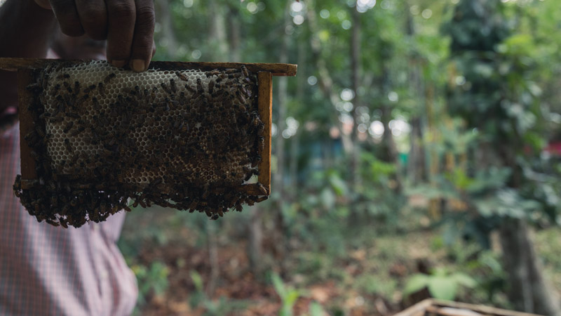

A beautiful combination of greenery and azure skies welcome backpackers to Kumarakom. A walk through God’s garden, the paddy fields of Kumarakom, is an enriching and humbling experience. It renders a feeling of refreshment just as exploring the State’s backyard beverage-toddy fills one with warmth and wonder. This tepid mild alcoholic drink made from the fermented sap of the coconut palm tree is a unique brew. The backwater cruises in Kumarakom offer a distinctive and ravishing experience which will last a lifetime.

Surrounded by the Vembanad Lake, Vaikom embraces travellers with its beautiful water bodies and serene village life. The emerald Murinjapuzha Backwaters and green carpeted nature allures the traveller in you to Vaikom. Besides this, the majestic Vaikom Mahadeva Temple enhances the exquisiteness of the place.
One of best beach experiences in Kerala is offered by the exotic shores of Kovalam. Apart from the shimmering waves and the alluring shores, Kovalam bestows one with the best Village Life Experience too making it a perfect spot in which to implement Responsible Tourism.
RT started in Ambalavayal in the year 2012. But even before that, tourists from inside and outside the country came here to experience the Village Life Package of Nellarachal. Ambalavayal is a developing RT destination. Several programmes and training are conducting in the region to develop it into a successful RT destination. A number of micro-unit meetings were also held which helped in the formation of several units as well. These units carry out sales worth around Rs.50 lakh per year.
Cloaked in the mystic charm of riveting woods and exotic wildlife, the serene and soothing Wayanad is one of the major tourist destinations in God’s Own Country. In Wayanad Responsible Tourism was first initiated in Vythiri village on 1st Sept 2008 almost six months after its launch in Kumarakom.
Thekkady located in Idukki district is an overwhelmingly beautiful place scented with the aroma of spice plantations and dotted with views of the vibrant wilderness. The Village Life Experience of Thekkady is unique and phenomenal. It takes one through the life of Vincent – a traditional medical practitioner, Philip- a Bee-keeping practitioner, Rajiv – a Pappad maker, Jomsy- a chocolate maker, and to the lesser known enthralling destination Valiyapara and the spiritual hotspot Shanthigiri Ashram.